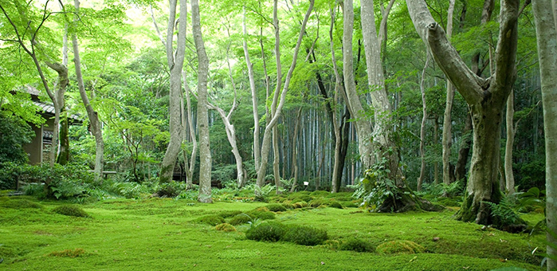

森林疗养，养生新时尚
森林疗养最早起源于上世纪40年代的德国，是以丰富多彩的森林生态景观、优质富氧的森林环境深厚浓郁的森林养生文化等为主要资源，配备相应的养生休闲及医疗服务设施，开展以修复身心健康、延缓生命衰老为目的的森林游憩、度假疗养、保健、养老等服务活动。
据人口普查资料，我国多数长寿老人和长寿区大都居住在环境优美、少污染的森林地区。澳大利亚科学家新近公布的一项研究也提出，每周1次至少30分钟逛城市绿化公园，可以让城市居民的抑郁症和高血压风险分别降低7%和9%。